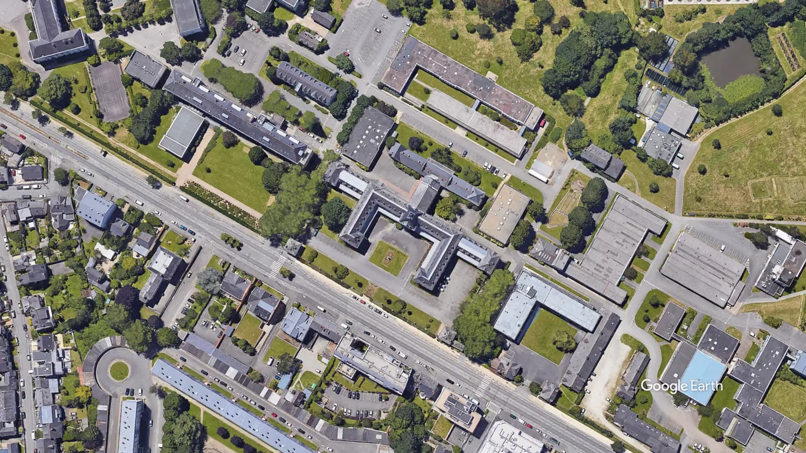
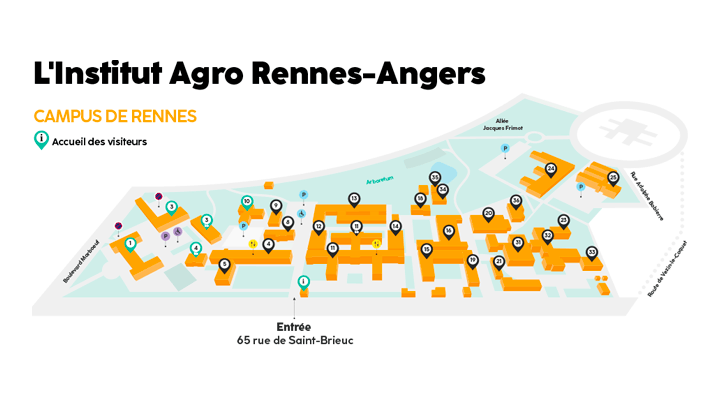

Google Earth
4ᵉ édition · Institut Agro Rennes
École d’automne
Data Science
Huit projets étudiants de Machine Learning appliqués au vivant.
Un après-midi de conférences
13h30 – 16h30 · Salle D4
Rendez-vous ici.
Découvrir les projetsAu programme
Des projets étudiants en Machine Learning
Chaque groupe présente le problème étudié, les données utilisées et les modèles qu’il a construits. Questions comprises dans le temps de passage.
Programme
L’après-midi en détail
Programme provisoire : l’ordre de passage et les résumés seront publiés prochainement.
Aucune conférence ne correspond à cette recherche.
Infos pratiques
Venir à l’Institut Agro

À propos
Le cadre de l’école d’automne
L’école d’automne clôt les enseignements de Machine Learning et de Computer Science for Big Data Approaches. Les étudiants de Master 2 et les élèves ingénieurs en spécialisation Sciences des données y présentent les projets menés en groupe.
Les sujets portent sur des données issues des sciences du vivant : santé, environnement, agronomie et chimie. Chaque présentation expose la question posée, les données, les modèles et leurs limites.
Les conférences sont ouvertes à tous, sans inscription.